Vos 4 livrets d’activités
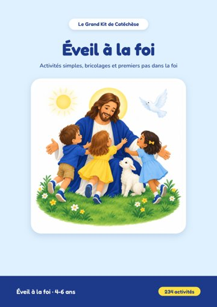
4-6 ansÉveil à la foi
234 activités pour découvrir Dieu, Jésus et Marie : coloriages, tracés, découpages. 237 pages.
Télécharger le PDFOuvrir dans le navigateur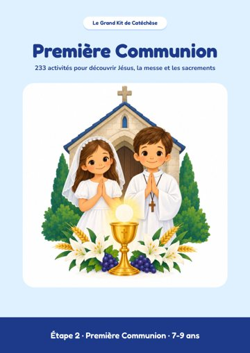
7-9 ansPremière Communion
233 activités pour préparer la Première Communion, avec les corrigés. 266 pages.
Télécharger le PDFOuvrir dans le navigateur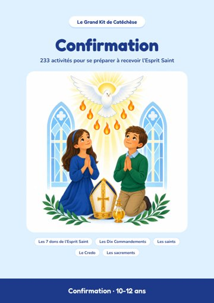
10-12 ansConfirmation
233 activités pour préparer la Confirmation, avec les solutions. 245 pages.
Télécharger le PDFOuvrir dans le navigateur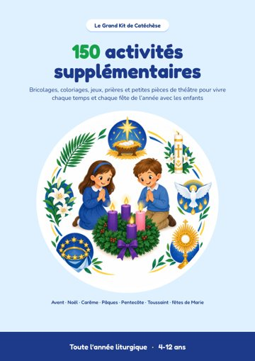
4-12 ans150 activités supplémentaires
Les temps forts de l’année : Avent, Noël, Carême, Pâques, Pentecôte, fêtes de Marie. 152 pages.
Télécharger le PDFOuvrir dans le navigateurVos 7 bonus
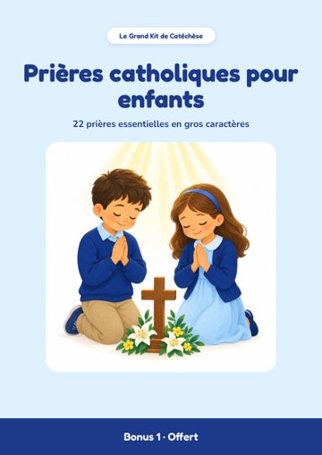
Bonus 1Prières catholiques pour enfants
22 prières essentielles en gros caractères. 23 pages.
Télécharger le PDFOuvrir dans le navigateur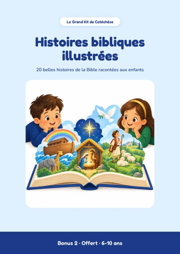
Bonus 2Histoires bibliques illustrées
20 histoires de la Bible à lire avec les 6-10 ans. 43 pages.
Télécharger le PDFOuvrir dans le navigateur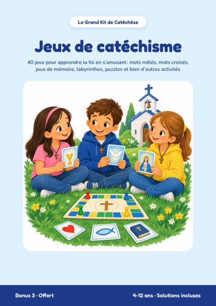
Bonus 3Jeux de catéchisme
40 jeux : mots mêlés, mots croisés, labyrinthes, avec les solutions. 50 pages.
Télécharger le PDFOuvrir dans le navigateur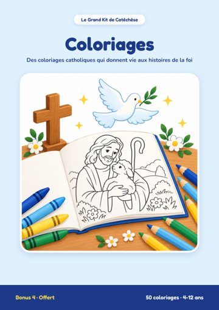
Bonus 4Coloriages
50 coloriages de la Bible et des saints, avec leur verset. 51 pages.
Télécharger le PDFOuvrir dans le navigateur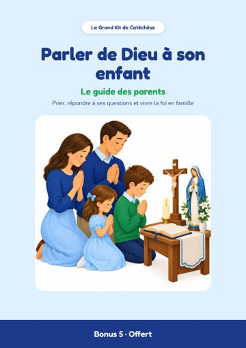
Bonus 5Parler de Dieu à son enfant
Le guide des parents : rituels, grandes questions, idées par âge. 22 pages.
Télécharger le PDFOuvrir dans le navigateur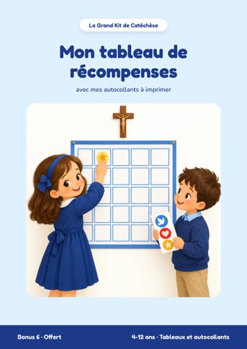
Bonus 6Mon tableau de récompenses
Tableaux de la semaine et du mois, autocollants et diplôme. 13 pages.
Télécharger le PDFOuvrir dans le navigateur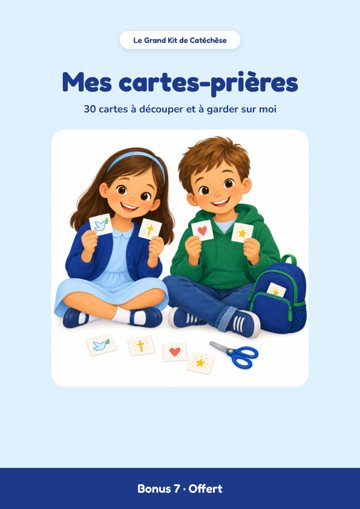
Bonus 7Mes cartes-prières
30 cartes à découper : prières, versets et paroles de saints. 8 pages.
Télécharger le PDFOuvrir dans le navigateurPar où commencer
- Téléchargez le livret qui correspond à l’âge de l’enfant : Éveil à la foi, Première Communion ou Confirmation.
- Imprimez les pages en A4, en taille réelle. Chaque page est une activité complète.
- Gardez les bonus à portée de main : les prières, les histoires et les jeux accompagnent chaque séance.
Pour un usage personnel, en famille, en paroisse ou en classe. La revente et la redistribution sont interdites.